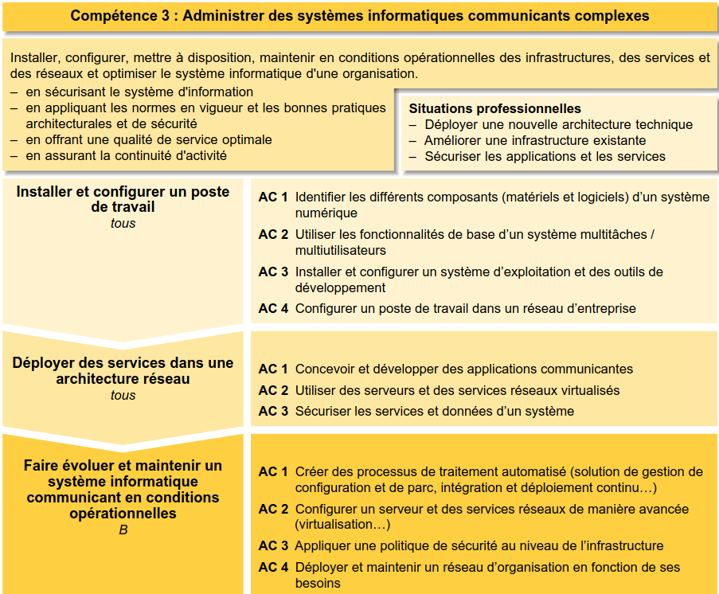
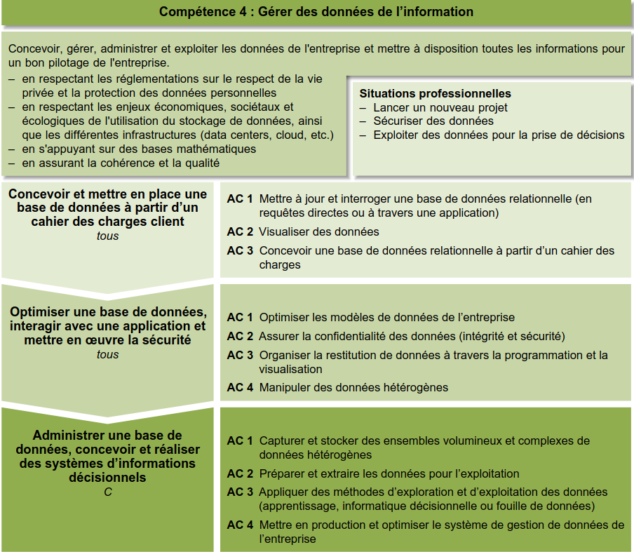
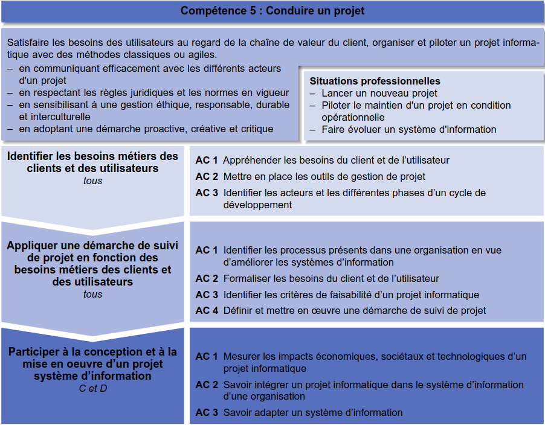

Synthèse de mes apprentissages pour les compétences 3, 4 et 5 du BUT Informatique (niveaux 1 et 2).

Administrer des systèmes informatiques communicants complexes

Gérer des données de l’information

Conduire un projet